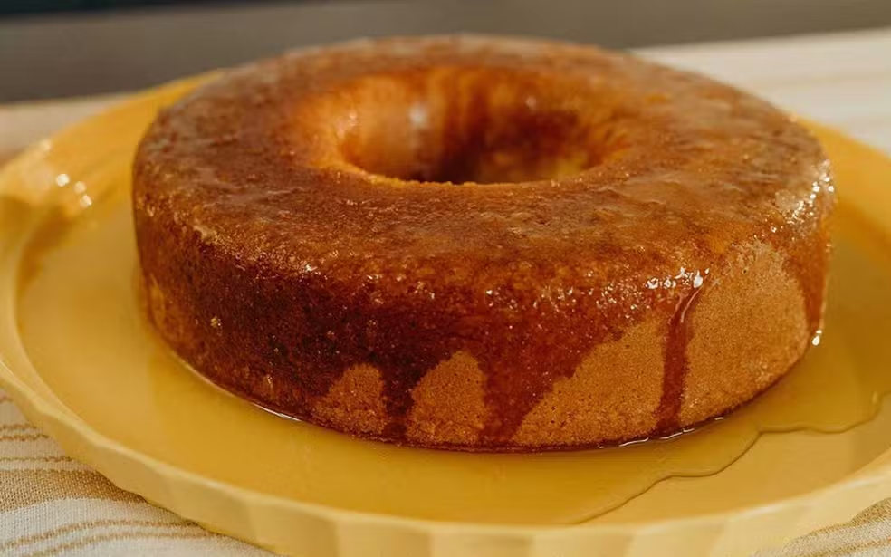

Voltar
Bolo de Laranja
Saiba como preparar um tradicional bolo de laranja fofinho que fica pronto em 30 minutos. Simples e
prática, a massa leva poucos ingredientes. Uma calda feita com açúcar e o suco da fruta deixa o bolo
molhadinho. Confira!

Ingredientes
Massa
- 3 Ovos
- 2 colheres de sopa de margarina
- 1 xícara de açúcar
- 2 xícaras de farinha de trigo
- 1 xícara de suco de laranja
- 1 colher de sopa de fermento
Ingredientes
Calda
- 1 xícara de açúcar
- Meia xícara de suco de laranja
Modo de Preparo
Massa
- Em uma tigela, coloque 3 ovos, 2 colheres de sopa de margarina e 1
xícara de açúcar. Misture.
- Em seguida, acrescente 2 xícaras de farinha de trigo e misture
novamente.
- Depois, despeje 1 xícara de suco de laranja na tigela e misture
novamente.
- Por fim, adicione 1 colher de sopa de fermento e misture novamente.
- Por fim, adicione 1 colher de sopa de fermento e misture novamente.
- Leve para assar em forno preaquecido a 180 graus Celsius por 30 minutos.